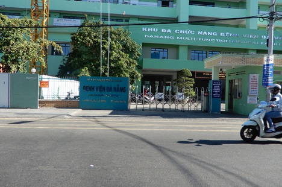

Trang chủ
Video
Sự kiện
Xã hội
Thế giới
Thể thao
XÃ HỘI

Trưởng ban Tổ chức Tỉnh ủy Quảng Ngãi qua đời sau một tháng đột quỵ
Cử tri đề nghị đưa vụ án tổ chức nhập cảnh trái phép thành án điểm
Một phụ nữ về từ Đà Nẵng, đợi ho sốt mới chịu khai báo y tế
Cơ quan của Bộ Lao động - Thương binh và Xã hội
Giấy phép hoạt động báo điện tử Dân trí số 298/GP - BTTTT Hà Nội, ngày 15-07-2020.
Tòa soạn: Nhà 48, ngõ 2 Giảng Võ, Cát Linh, Đống Đa, Hà Nội
Điện thoại: 024-3736-6491. Fax: 024-3736-6491
Email: info@dantri.com.vn. Website: https://www.dantri.com.vn
Mọi hành động sử dụng nội dung đăng tải trên Báo điện tử Dân trí tại địa chỉ www.dantri.com.vn phải có sự đồng ý
bằng văn bản của Báo điện tử Dân trí.